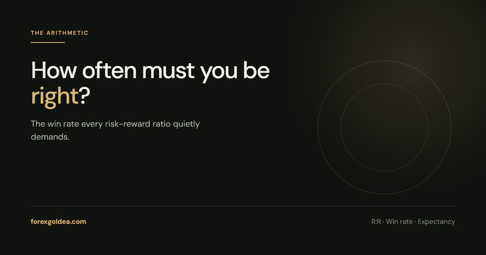

Break-Even Win Rate: The Number Behind Your R:R

Every risk-reward ratio comes with a win rate attached — the percentage you have to hit just to stand still. Knowing that number turns "I like 1:3 setups" into something you can check against your own results.
The formula
For a reward-to-risk ratio of R, the win rate that breaks even is:
Break-even win rate = 1 ÷ (1 + R)
At 1:2, that is 1 ÷ 3 = 33.3%. Win a third of your trades at twice your risk and you finish exactly where you started, before costs.
The table
| Reward : risk | Break-even win rate | Out of 20 trades |
|---|---|---|
| 1 : 1 | 50.0% | 10 wins |
| 1.5 : 1 | 40.0% | 8 wins |
| 2 : 1 | 33.3% | 6.7 wins |
| 3 : 1 | 25.0% | 5 wins |
| 4 : 1 | 20.0% | 4 wins |
| 5 : 1 | 16.7% | 3.3 wins |
Read it as a floor, not a target. Hitting exactly the break-even rate means months of screen time for nothing.
What the table quietly leaves out
These figures assume a trade either hits the full target or the full stop, and that it costs nothing to place. Neither is true.
Spread, commission and any swap come out of every trade, win or lose. On gold, where the spread is wide relative to a tight stop, that gap is not decoration. If costs eat 5% of the average trade, the real break-even at 1:2 is closer to 35% than 33%.
Partial exits complicate it further. Taking half the position at 1:1 and letting the rest run changes the effective R of every trade, and the single-number table stops applying.
Why high R:R is not a free lunch
A 1:5 plan needs to be right only one time in six, which sounds like a licence to be wrong. The catch is that the market has to travel five times your stop distance before the target fills — and a lot of trades spend days almost getting there and then reverse.
In practice, raising R lowers the hit rate, and often by more than the arithmetic saves you. The useful question is not "what is the best ratio" but "what ratio does this strategy actually achieve on this instrument, measured over enough trades to mean something".
Using it on your own numbers
Take your last 30 to 50 trades. Work out the average reward-to-risk you really achieved — not what you intended — and your actual win rate. Put them side by side with the table.
If your win rate sits below the break-even line for your average R, the strategy is losing money regardless of how good the individual trades felt. The risk calculator shows the break-even rate for any ratio you type in, alongside what a losing streak does to the balance at your chosen risk.
Reader questions
What win rate do I need at 1:2 risk reward?
Exactly one third, or 33.3%, to break even before costs. Spread, commission and swap push the real figure a little higher - budget for something closer to 35%.
Is a high win rate better than a high risk-reward ratio?
Neither on its own. A 90% win rate at 1:0.2 loses money the moment one trade runs past its stop, and a 1:5 plan with a 10% hit rate loses steadily. What matters is the combination clearing the break-even line with room to spare.
How many trades do I need before my win rate means anything?
More than most traders use. Thirty trades gives an impression; a hundred starts to be evidence. A run of five wins says almost nothing about a strategy either way.
Why do costs change the break-even win rate?
Because they are charged on every trade regardless of outcome. They shrink each win and deepen each loss, so the win rate has to rise to cover them. The effect is biggest on tight stops, where the spread is large relative to the trade.
Does the formula still work if I take partial profits?
Not directly. Scaling out changes the reward on each trade, so a single reward-to-risk number no longer describes the system. Track the average result per trade in dollars instead and compare it to the average risk.
Where this leaves you
The break-even win rate is the least emotional number in trading. It does not care how clean the setup looked. Work out the one your average ratio demands, compare it honestly to what you actually hit over a sample worth trusting, and you will know whether the edge is real before the account tells you the expensive way.
Affiliate disclosure: we earn a commission when you open and fund an account through our partner links, at no extra cost to you.